为什么是今年
国家在推
- 2025.08国务院“人工智能+”行动
- 2026.04教育部：教师智能素养标准、师范生培养改革
规则已立
- 2025.09AI 生成的内容，发布必须标识
- 2026.09最高法：擅用他人形象构成侵权
同行已动
- 北京大学AI 宣传片《举火》
- 上海交大AIGC 短片入选网信办年度精品
师范院校宣传部门公开的 AIGC 作品还很少：空白，也是机会。
26 条需求，其实是四类事
四类学会了，所有工作都能套，教学也一样。
四类事，三个软件就够
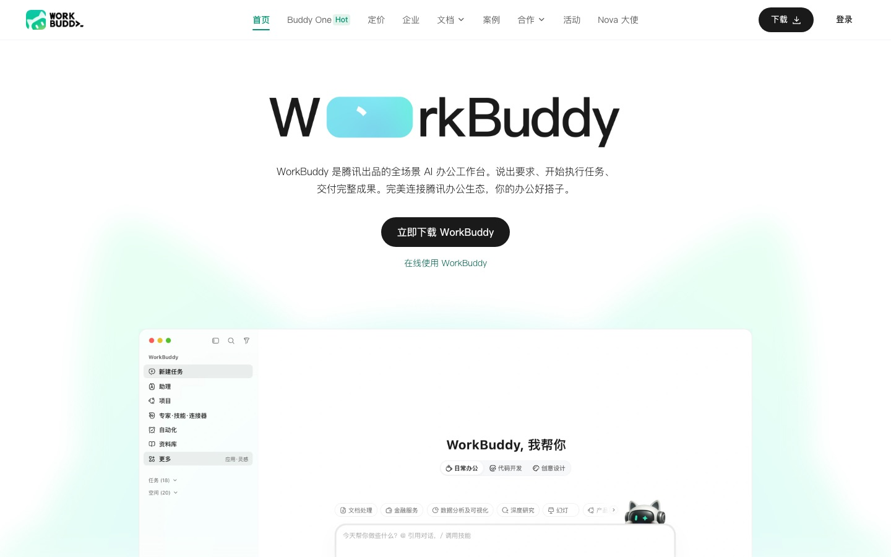

WorkBuddy
腾讯出的 AI 办公助手。说一句话，它自己动手，交付文档、表格、PPT。
- 读写文件夹
- 技能
- 定时任务
- 手机派活
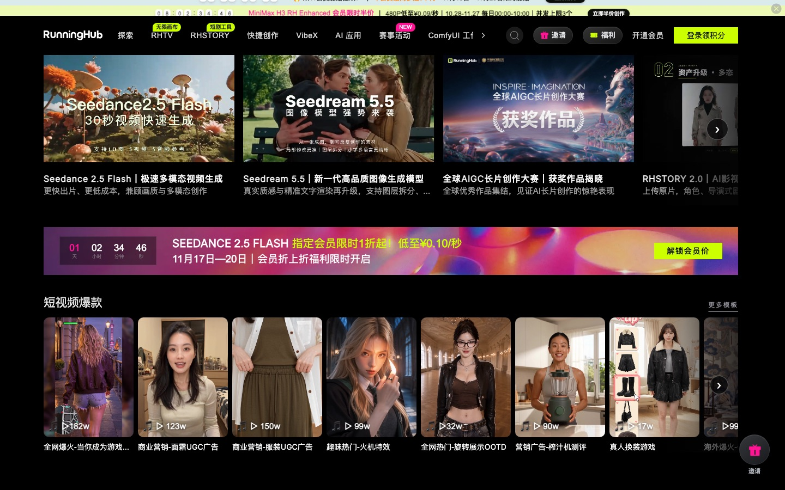
RunningHub
国内的云端出图、出视频平台。
- 海报配图
- 图生视频
- 数字人、配音
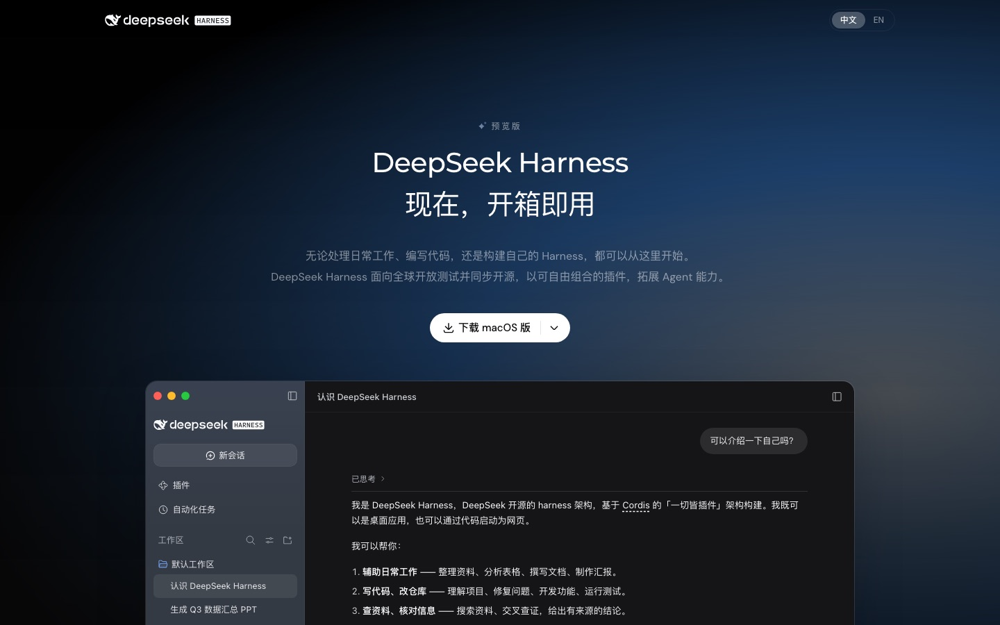
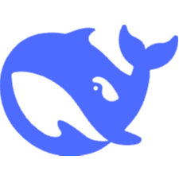
DeepSeek Harness
深度求索开源的智能体工作台，装在自己电脑上。
- 本地工作区
- 插件
- 自己的工作台
学一个，会一类
文本类
课上做一页简报 · 热点早报 · 汇报稿
之后自己能做新闻稿、推文、纪要、公文、教案
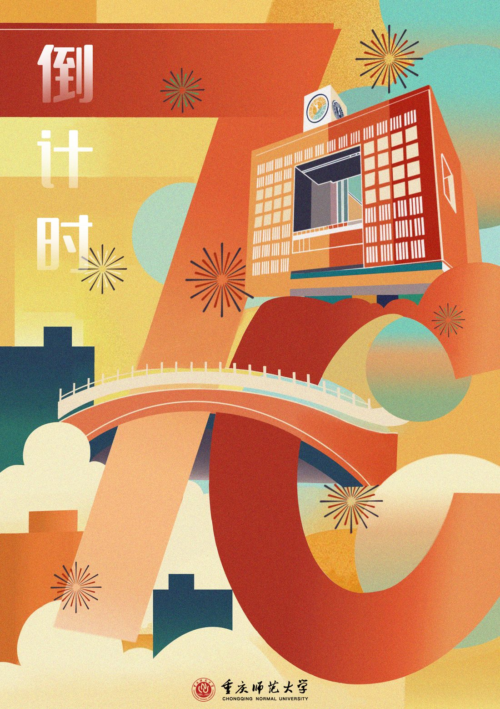
图片类
课上做活动海报 · 老照片修复
之后自己能做表情包、节气海报、绘本、课件配图
视频类
课上做15 秒校园短片
之后自己能做宣传片、今昔对比、数字人播报、微课
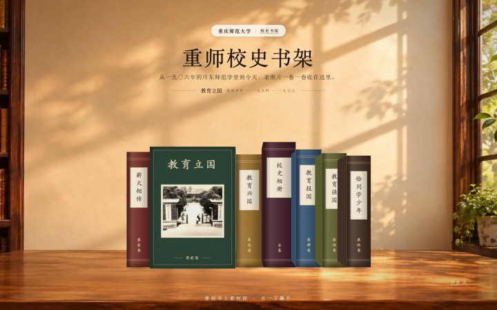
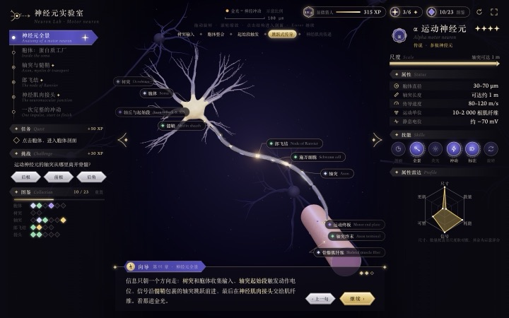
代码类
课上做活动出整套 · 数字员工
之后自己能做选题提醒、教学小游戏、互动课件
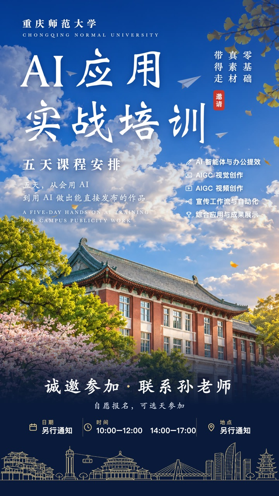
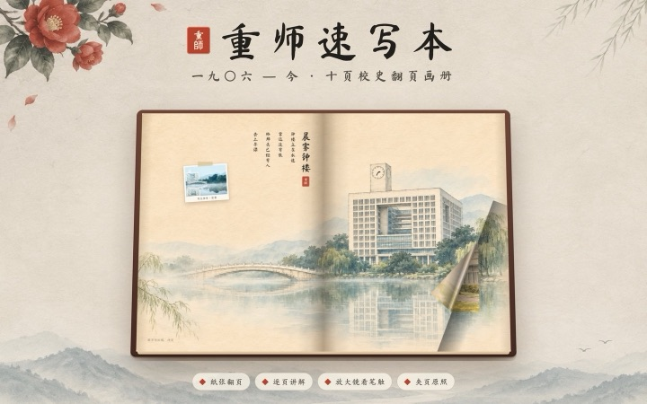
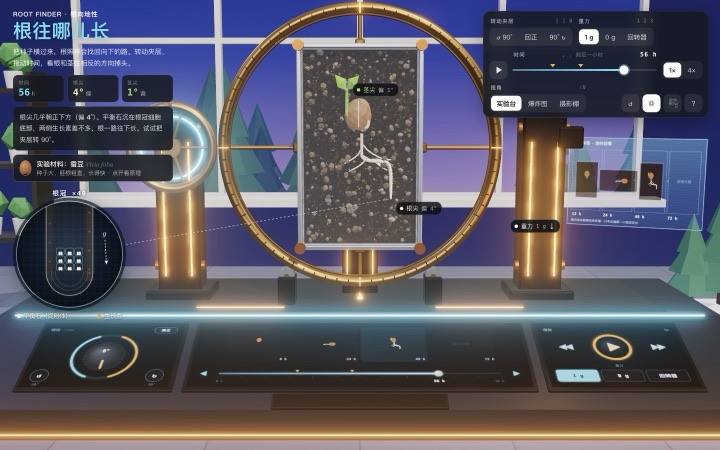
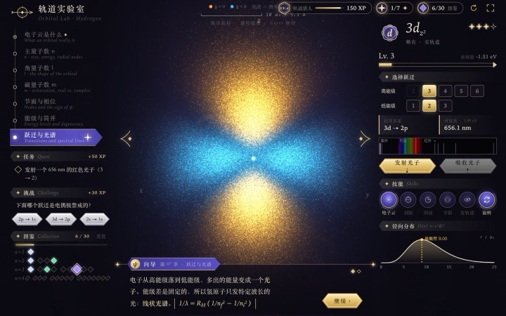
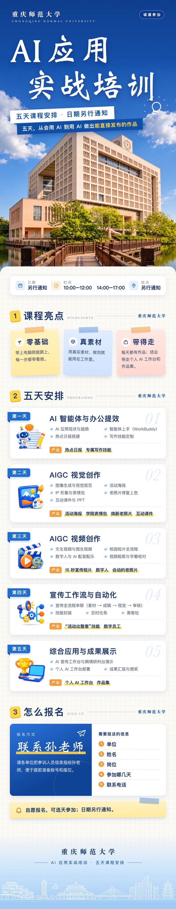
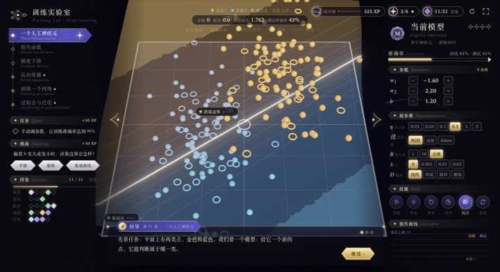
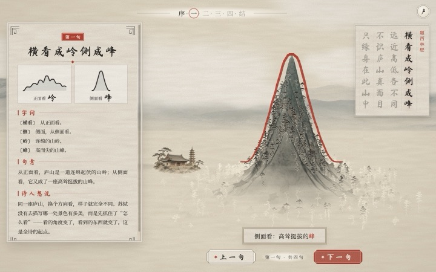
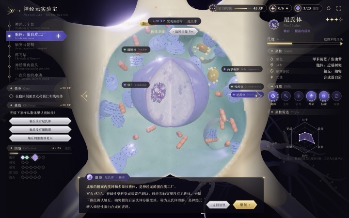
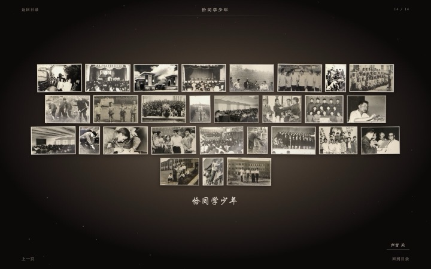
WorkBuddyAI 智能体与办公提效
- 01
一份材料变一页简报
讲话稿、活动通稿本单位的通知、总结一节课的教案或一篇课文一篇论文或课程笔记
- 02
热点早报
宣传和理论热点本领域动态（学工、教务、科研）本学科的教研动态教资、考研、招聘信息
- 03
向上汇报的稿子
公众号年度运营汇报本单位账号数据或年度工作总结学期教学总结、成绩分析实习总结、社团或学生会述职
- 04
把自己的写法存成技能
学校新闻稿的写法本单位通知的格式自己的教案模板课程论文的格式
WorkBuddyAIGC 视觉创作
- 01
活动海报
新闻宣传活动月本单位的讲座、会议课程封面、公开课社团招新、班会
- 02
老照片修复上色
校史老照片院系老照片学科史料图片家里的老照片
- 03
一图读懂
讲话要点办事流程、指南一节课的知识点课程笔记
- 04
节日海报、表情包
学校官方账号本单位公众号班级群社团账号
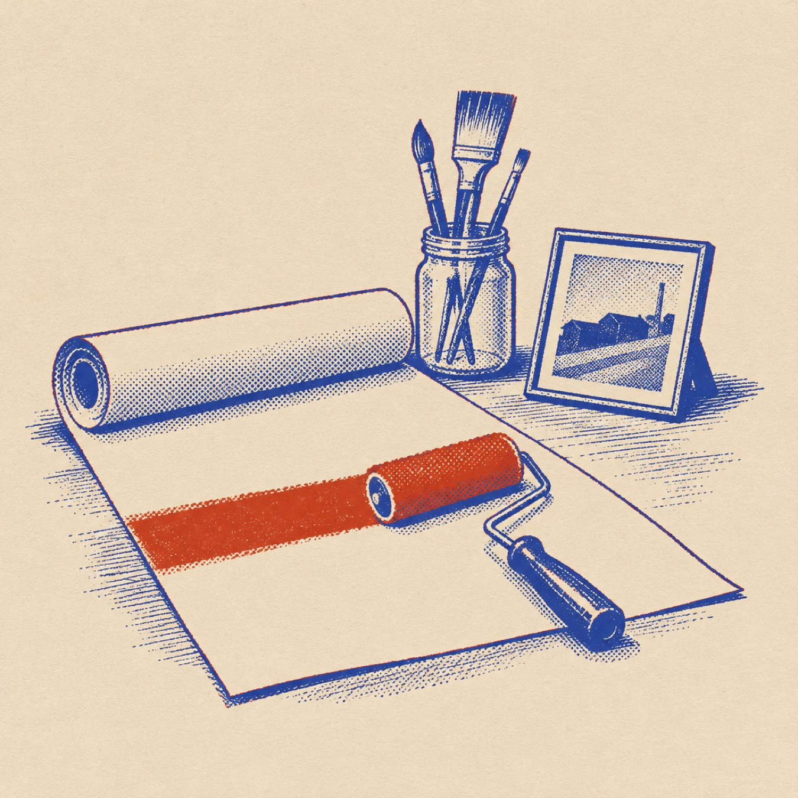
02第二节 / 5RunningHubAIGC 视频创作
- 01
三张照片，变 15 秒短片
校园风景本单位活动照片课堂、实验照片社团活动照片
- 02
老照片动起来
校史老照片院系老照片学科人物、史料毕业合影
- 03
数字人播报
一条校园新闻一则通知微课开场自我介绍
- 04
活动快剪
开学典礼本单位的一场活动公开课片段晚会、比赛
WorkBuddy · RunningHub宣传工作流与自动化
- 01
一场活动的宣传，一次出齐
办学 120 周年、美术展开幕式本单位的一场活动一堂公开课一场社团活动
- 02
数字员工
早报、校历选题提醒周报、截止日期提醒备课资料、作业提醒考试、报名提醒
- 03
黑客松
抽命题，现场做
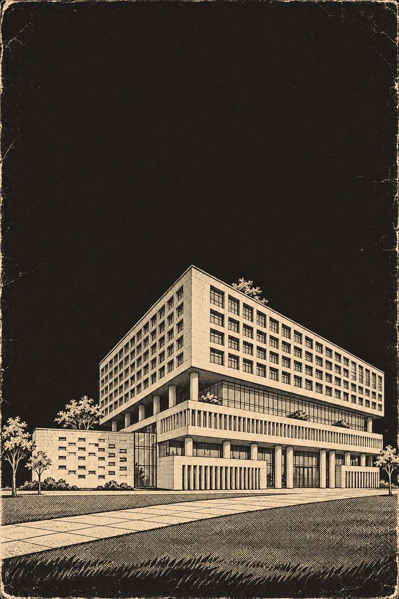
04第四节 / 5WorkBuddy · RunningHub综合应用与成果展示
- 01
内容工作台
演示
- 02
我教你一招
每人 3 分钟
- 03
路演和颁奖
每组一位
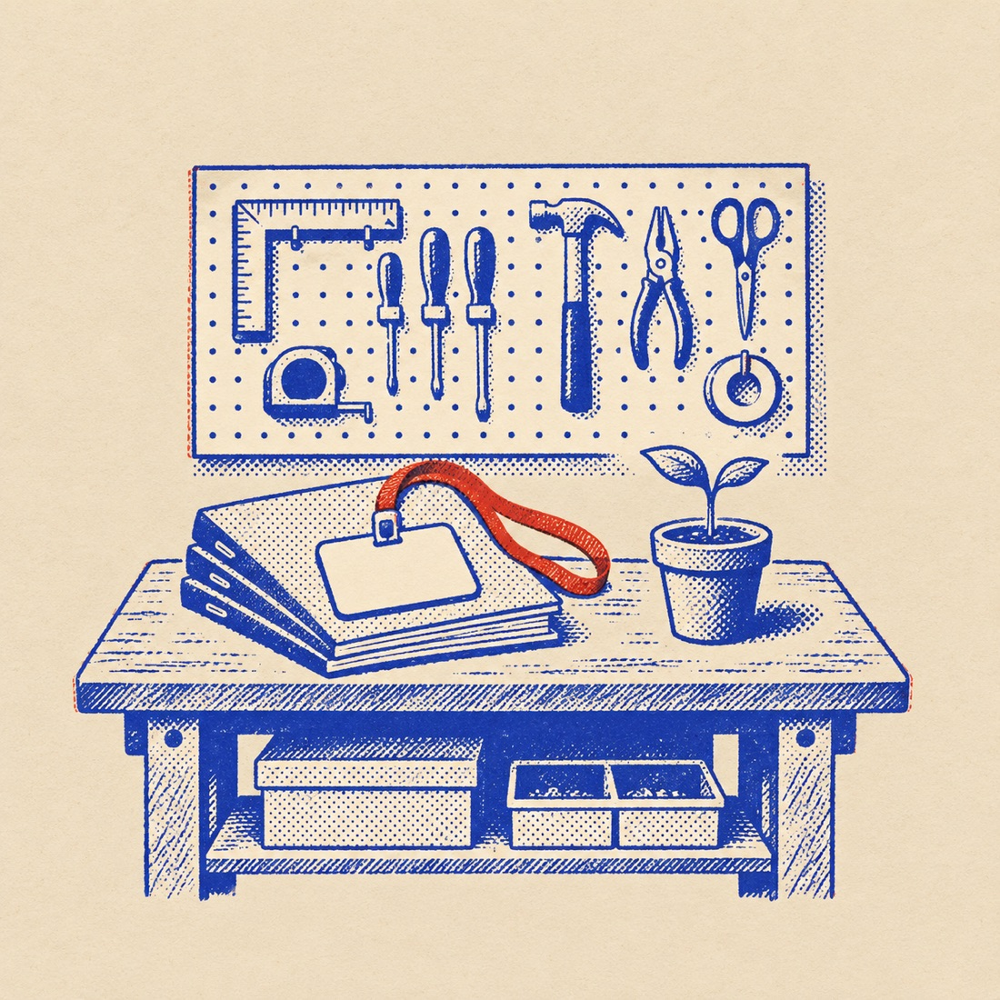
05第五节 / 5DeepSeek Harness怎么玩
- 01
AI 工牌
课表、提醒、交作业、看分数
- 02
组队
第 2 或第三节，4–5 人一组
- 03
比赛
这节课作品 + 限时挑战卡
- 04
排名
评委打分 + 观众投票，只公布前三
- 05
奖惩
垫底转趣味转盘；交齐作品，解锁“AI 种子教师”
- 1
- 2
- 3
五节课之后，带走这些
作品集
每人一个能分享的链接
技能和数字员工
回去接着用
工牌和证书
“AI 种子教师”
100+ 案例库
照着扩展，持续更新
内容工作台
结业这节课装进电脑
班级群
资料、回放、答疑
 ×
×